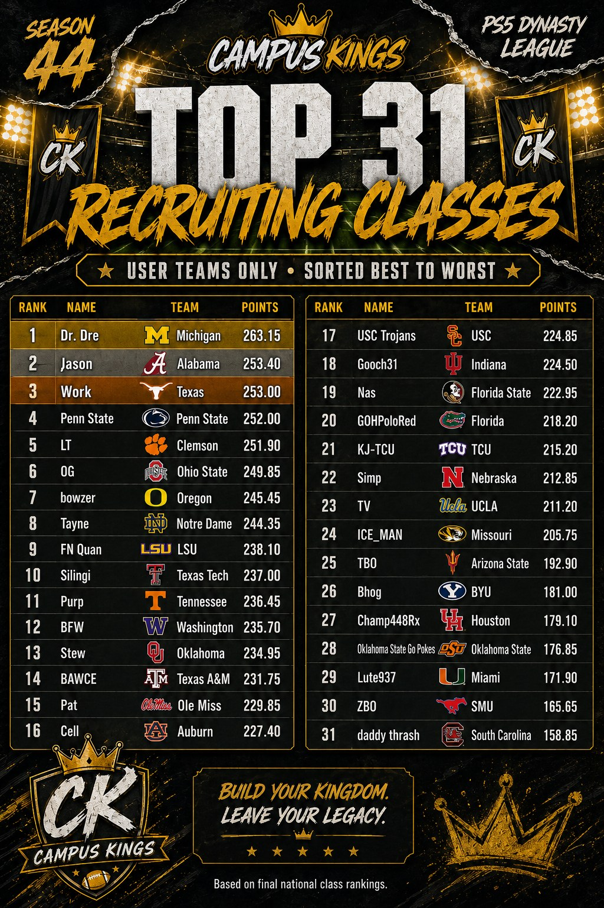
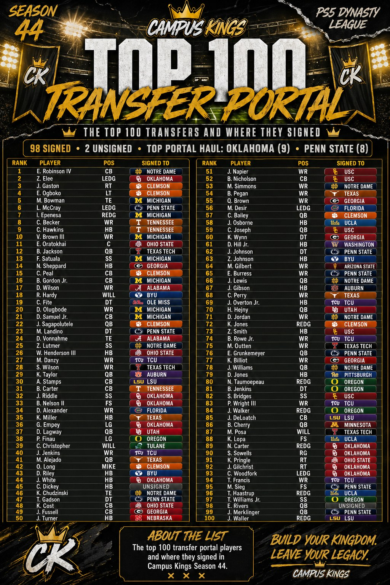
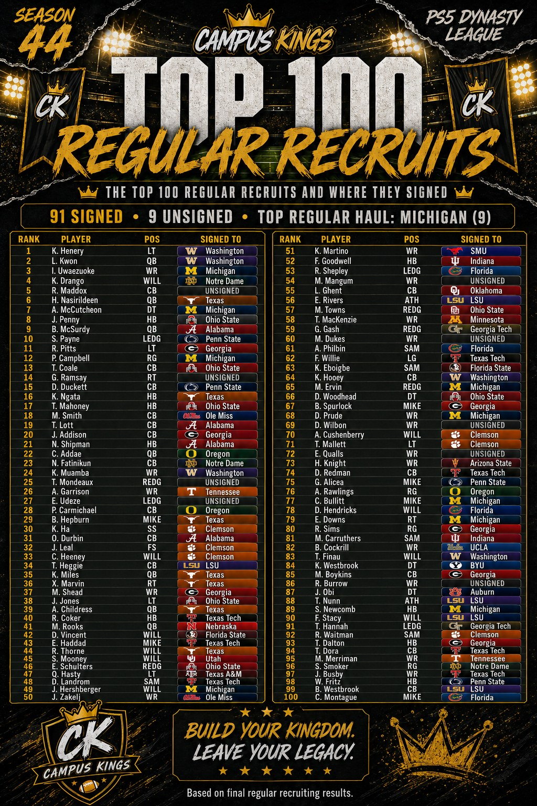

Class rankings, the transfer portal top 100, and regular recruiting top 100 — all three boards, backdated to the archive.



Backdated for the record. Season One's recruiting cycle produced three sets of final results — user class rankings, the transfer portal top 100, and the regular recruiting top 100 — and none of them had a home on the site until now. All three graphics are above; the numbers below are pulled straight from them.
Thirty-one user teams, sorted best to worst, and the top of the board was a knife fight.
Dre took it at Michigan with 263.15, and it wasn't especially close — his margin over second is nearly ten points, the largest gap anywhere in the top fifteen. After that the field compresses to almost nothing:
Four-tenths of a point separates second from third. One-tenth separates fourth from fifth. Four teams inside a point and a half, which is as tight as this board has ever finished.
From there it's a steady slide — OG at Ohio State 249.85, Bowzer at Oregon 245.45, Tayne at Notre Dame 244.35, Quan at LSU 238.10 — down to Thrash at South Carolina anchoring the list at 158.85. Top to bottom the spread is 104.30 points, which is the real story of the cycle: the gap between a top-five class and a bottom-five class is now wider than the gap between second and twentieth.
Worth noting for the archive: this board reflects the Season One roster, so Cell is still at Auburn, Quan is still at LSU, Ice Man is still at Missouri, and Nas is still at Florida State. All four of those seats have since changed hands.
98 of the top 100 signed somewhere. Only two went unclaimed — C. Dickey at 45 and E. Rivers at 98, both of whom sat on the board while ninety-eight players around them found homes.
The haul leaders were Oklahoma with nine and Penn State with eight. Stew's nine is the most aggressive portal work anyone did in Season One, and it's front-loaded: Z. Elee, the number-two player available, plus four more inside the top fifty.
At the very top, Notre Dame landed the board's best player in E. Robinson IV, and Clemson took two of the next three — J. Gaston and E. Ogboko at three and four. Michigan's portal work was quieter than its class ranking suggests, but it picked up M. Bowman and I. Epenesa in the top seven.
91 signed, 9 unsigned — a noticeably softer close than the portal, where only two players went unclaimed.
Michigan led with nine, which paired with the number-one class ranking makes Dre's cycle the most complete on both fronts. Washington got the headline, though: K. Henery and L. Kwon, the top two players on the board, both signed there. That's the only time in either top 100 that one program took the first two names.
The nine that went unsigned were scattered rather than clustered at the bottom — R. Maddox went unclaimed at number five, G. Ramsay at fourteen, T. Mondeaux at twenty-five, and E. Udeze at twenty-seven. Four of the top thirty available and nobody took them.
Filed to the archive after the fact. The graphics are the source of record; if a number here doesn't match one of them, trust the graphic.
{kind=link}
{kind=link}
{kind=link}